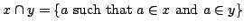

Usage
intersection(x,y)
intersection!(x,y)
Signature
intersection: (%, %) %
| Parameter | Type | Description |
|---|---|---|
| x,y | % | sets |
Returns
Return .
Remarks
intersection! does not make a copy of, which is therefore modified after the call. It is unsafe to use the variable